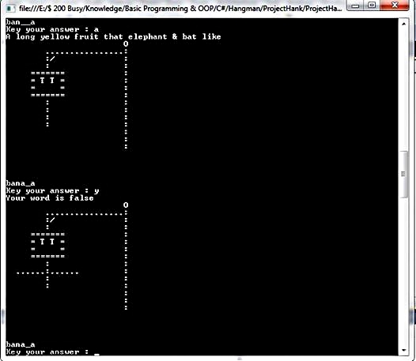

<style>
    .ban_style_c_sharp{
        background-color: skyblue;
    }
    .ban_white{
        color: black;
        background-color: white;
    }
        @media only screen and (min-width: 700px) {
            #hanman {
                width: 526px;
            }
        
        }
        @media only screen and (max-width: 699px) {
            #hanman{
                width: 100%;
            }
        }
</style>
<ion-view view-title="C#">
    <ion-content overflow-scroll="true">
        <div class="rowly ban_style_c_sharp">
            <div class="coly-1"></div>
            <div class="coly-10">
                <h2><span class="now_rap">Hangman Game </span>
                    (โปรเจคสมัยปี 1 โปรเจกแรกในชีวิต)</h2>
                <br/>
                <div align="center">
                    
                </div>
                <br/>
                <div class="story_text">
                    &nbsp;&nbsp;&nbsp;&nbsp;เป็นโปรเจคที่ Run ผ่าน Command Line ไม่มี GUI
                เพราะว่า เป็นโปรเจคของวิชา พื้นฐานโปรแกรมมิ่ง ตอนนั้น ยังเขียน loop ไม่ค่อยจะเป็นเลยครับ เขียนโปรแกรมแบบถึกมากๆๆๆ
                เป็นโปรเจคที่เป็นจุดเริ่มต้นของชีวิตการเป็นโปรแกรมเมอร์ทุกวันนี้ครับ ตัวโปรแกรมหายไปตามกาลเวลา โค้ดเพื่อนในกลุ่มก็ไม่มีใครเก็บไว้ T^T 
                คงเหลือแต่รูปภาพ ไว้เป็นที่ระลึก ...
                
                <br/><br/>
                <b>ความรู้ที่ใช้ : </b>C# 4.0 , Console Application , Basic Programming , OOP แบบเกรียน (ตอนนั้นเขียนเป็นแต่ public ครับ 55)
                <br/><br/>
                <b>ฐานข้อมูล : </b> (ไม่มีฐานข้อมูลครับ ตอนนั้นยังไม่ได้เรียน Database พื้นฐาน) ใช้การเก็บข้อมูลใน .txt ไฟล์ครับ (File.IO Streamwriter , Streamreader)
                <br/><br/>
                
                </div>
            </div>
            <div class="coly-1"></div>
        </div>
    </ion-content>
</ion-view>

